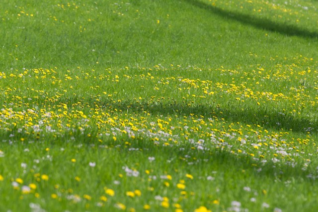
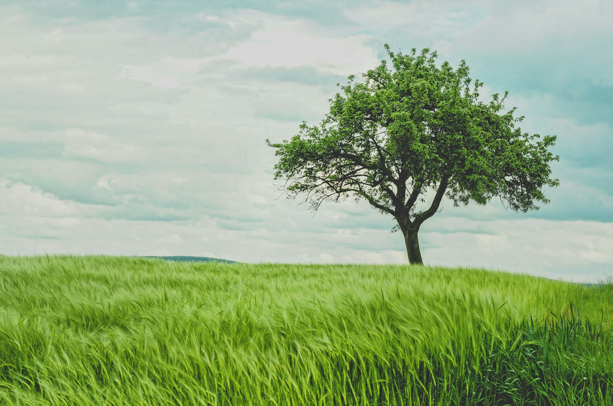
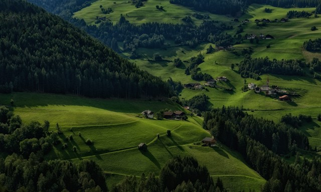
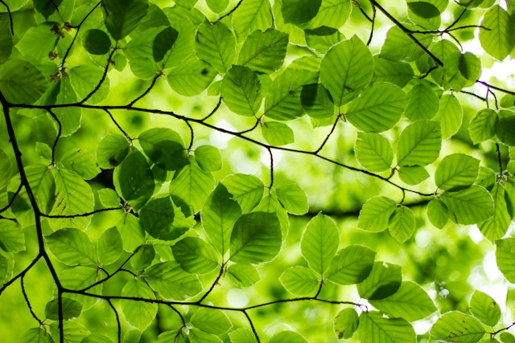
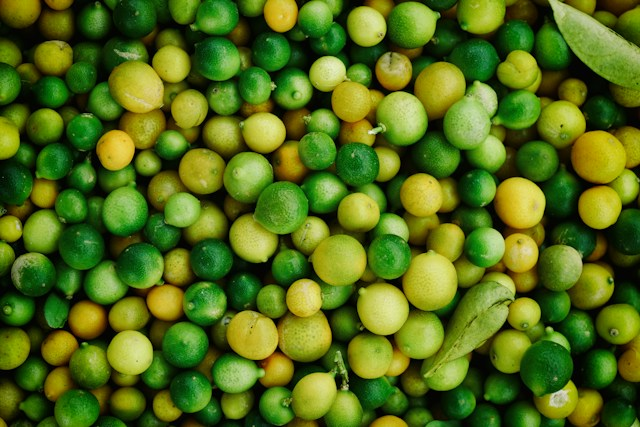
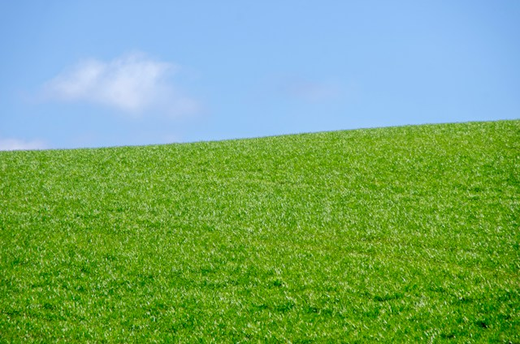
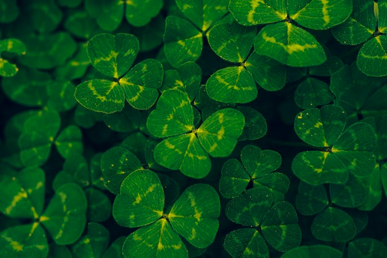
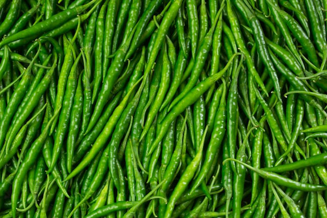
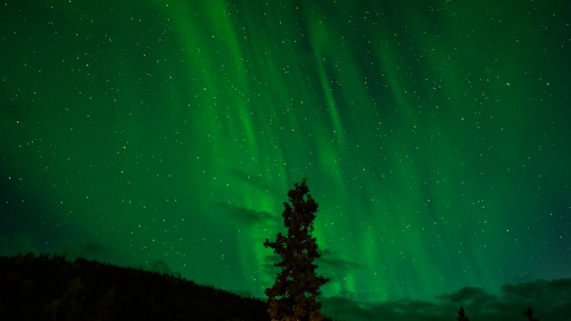
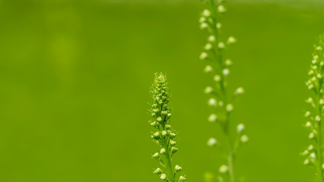

Meadow
#6E9A3A
A soft, warm green, mixed with small spots of yellow and white from the flowers.

Green is one color, but it never looks the same twice. It changes with light, distance, and material. Each image below shows a different green, along with a hex value sampled from the photo.

A soft, warm green, mixed with small spots of yellow and white from the flowers.

Distance and shadow make this green deep and muted. The far hills fade toward blue.

Sunlight passing through the leaves makes this the brightest green in the study.

Every fruit is a slightly different shade, from yellow-green to deep green.

A clean, even green, made stronger by the blue sky above it.

A dark, cool green with lighter markings on each leaf.

Glossy skin reflects the light, so the green shifts from bright to dark across each pepper.

This green is light itself. It glows against the night sky.

A blurred background turns the whole frame into a soft field of yellow-green.